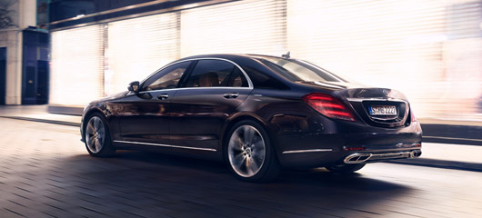

Mercedes-AMG S-Class
Handling characteristics. Suspension – The epitome of composure.

Характеристики управляемости. Подвеска — воплощение самообладания.
Подобно бегуну, который естественным образом компенсирует каждое изменение направления своим телом, опциональная система MAGIC BODY CONTROL с функцией Curve автоматически реагирует на ускорение на поворотах. Пассажиры путешествуют с заметно большим комфортом и безопасностью в новом седане S-Класса.
Элегантная уравновешенность и уверенность.
Харизматичный экстерьер впечатляет своим интенсивным сиянием статуса и престижа — особенно передняя часть с новыми опциональными светодиодными фарами MULTIBEAM LED теперь выглядит еще более выразительно.

Оборудование.
Роскошь иметь выбор. В виде седана или в версии с длинной колесной базой: седан S-Класса никогда не бывает обычным автомобилем. Индивидуальные пакеты оборудования превращают его в вашего индивидуального компаньона.
Mercedes-AMG GLE
Извлеките максимум из каждой земли.

Легкое превосходство — это нормально.
Будь то стандартная комплектация или модель AMG: купе GLE с первых же метров производит впечатление настоящего спортивного купе. Спонтанность и ловкость впечатляюще высоки; и – благодаря возможности индивидуальной настройки параметров – технологии всегда на волне водителя.
Элегантная уравновешенность и уверенность.
Динамика автомобиля, удовольствие от вождения, комфорт при езде — в GLE Coupé все зависит от настройки: с помощью до пяти программ DYNAMIC SELECT на выбор вы можете настроить характеристики двигателя, рулевого управления, системы переключения передач и подвески от комфортных до очень комфортных. спортивный. Специально настроенная пневматическая подвеска AIRMATIC с адаптивной системой демпфирования ADS PLUS адаптируется к дорожной ситуации и дорожным условиям — от комфортной до очень спортивной настройки в зависимости от выбранной программы вождения.

Дышите свободой.
Динамизм. Напористость. Искусство отпускать. Те, кто обладает этими качествами, излучают особую безмятежность, ценят достигнутое и наслаждаются каждым моментом в полной мере. Это возвышенное состояние. И возвышенность проявляется в различных формах. Откройте для себя Mercedes-Benz GLE и купе GLE. Как дома на любой местности.
Mercedes-Benz V-Class.
Большой, как жизнь.

ЛКонцепция транспортного средства.
С Mercedes-Benz V-Класса семьи путешествуют еще более расслабленно, искатели приключений наслаждаются каждым моментом еще интенсивнее, а пассажиры маршрутных автобусов добираются до места назначения так комфортно и стильно, как никогда раньше.
Основные моменты.
Испытайте изменчивость V-Класса. Универсальная концепция интерьера превращает Mercedes-Benz V-Class в комфортабельный минивэн с множеством возможностей. Просторный салон является образцовым с точки зрения эргономики, функциональности и дизайна.

Интеллектуальный привод «Мерседес-Бенц».
Интеллектуальные системы для большей безопасности, комфорта и возможности подключения. Компаньон, на которого можно положиться. Благодаря своим системам помощи и безопасности V-Класс поддерживает вас во многих дорожных ситуациях, чтобы вы могли добраться до места назначения с большей безопасностью, расслабленностью и стилем.
Mercedes-AMG GLE
В своей стихии на любой местности.

Дышите свободой.
Динамизм. Напористость. Искусство отпускать. Те, кто обладает этими качествами, излучают особую безмятежность, ценят достигнутое и наслаждаются каждым моментом в полной мере. Это возвышенное состояние. И возвышенность проявляется в различных формах. Откройте для себя Mercedes-Benz GLE и купе GLE. Как дома на любой местности.
Излучающий свободу.
GLE воплощает в себе уникальный взгляд на мир. Его уверенный рост, утонченные линии с высокой поясной линией и сильно подчеркнутые колесные арки придают особое очарование всем тем, кто хочет лидировать, а не просто следовать за ним. Вдохновленный теми, кто каждый день отваживается идти по новым дорогам.

Независимость идти.
В знакомой позе, над всем этим. Благодаря исключительному комфорту и высококачественным деталям и материалам салон GLE излучает простор. И где бы вы ни находились, Mercedes me connect позволит вам оставаться на связи с еще большим миром благодаря инновационным услугам подключения, которые открывают захватывающие возможности для цифрового общения.
Mercedes-CLS.
Дизайн. Освещенный.

Интеллектуальный привод «Мерседес-Бенц».
Будь то час пик, длительная ночная поездка или незнакомая дорога – ваш CLS Coupe заметно снимает напряжение, особенно в стрессовых ситуациях. Это основано на концепции, которая делает каждую поездку на Mercedes-Benz безопасной и уникальной: Mercedes-Benz Intelligent Drive. Потому что время, которое вы проводите за рулем, — это ваше время. Время для отдыха. Время пополнить свою энергию. Так что, в первую очередь, вы безопасно доберетесь до места назначения, но также всегда будете расслаблены, когда доберетесь туда.
Несущий свет во тьму.
MULTIBEAM LED очень быстро и точно адаптирует фары к текущим условиям движения, например, на поворотах, на автомагистрали или в тумане. Инновационная технология позволяет использовать непрерывный дальний свет, не ослепляя других участников дорожного движения. Индивидуально управляемые светодиоды направляют свет точно так, чтобы заслонять другие транспортные средства, в то же время освещая окружающее пространство с почти дневной яркостью. Когда вы отпираете автомобиль, приветственный свет приветствует вас необычным световым шоу.

Оборудование.
Элегантный. Начальство. Неотразимый: благодаря нашим хорошо продуманным пакетам оснащения вы сможете подобрать для своего CLS Coupé все, что вам нужно, во всех деталях. Для большего комфорта и эксклюзивности.
Mercedes-E-Class Coupe
Шедевр интеллекта.

Новое купе Е-Класса. Следующий значок.
Не успели мы закрыть новый кабриолет Е-Класса, как купе завораживает нас своим очарованием. Учебник Гран Туризмо. Его уникальная изящная линия крыши плавно переходит в спортивную заднюю часть. Это создает современную, захватывающую дух эстетику.
Магнитно притягивает взгляд.
Совершенные пропорции и чувственная чистота венчают новое купе E-Класса как классику дизайна. Уникальный пакет технологий как шедевр интеллекта. Изысканная ромбовидная решетка радиатора и опциональные светодиодные фары MULTIBEAM LED светят далеко вперед: ни одно другое купе не демонстрирует в равной мере такое сочетание динамики, комфорта и безопасности на дороге.

Контрасты – они делают людей интересными, а купе неотразимыми.
Черное и белое символизирует слияние крайностей. В случае купе Е-Класса это характерный дизайн, спортивность и эксклюзивность. Многие компоненты опционального пакета Night выполнены в черном цвете. На контрасте с блестящим лакокрасочным покрытием designo «Белый бриллиант Bright» они создают захватывающее зрелище.
Mercedes-C-Class Estate
Лучшее не знает альтернативы.

Высшая степень щедрости.
Щедрость абсолютна, когда она очевидна повсюду. В дизайне, который увлекает и не отпускает. В инновационных технологиях, которые превращаются в ни с чем не сравнимые ощущения от вождения. И это очевидно в пространстве, которое более чем соответствует вашим ожиданиям. Испытайте утонченную щедрость: универсал C-Класса.
В гармонии со своим ростом..
C-Класс предлагает впечатляющую динамику – на каждом метре и с каждым взглядом. Современные технологии шасси, такие как опциональный пакет AIRMATIC Dynamic Handling, впечатляют не меньше, чем элегантные дизайнерские решения. Достаточно взглянуть на рейлинги на крыше модели Estate: они в полной гармонии следуют элегантной линии дизайна. Для меньшего сопротивления ветру и заметно большей динамики.

Прогулка в специальном месте.
Космос — это роскошь. Когда универсал C-Класса предлагает это, он выходит за рамки самого себя. С еще большим пространством сзади для высокого уровня комфорта сидения. И с еще большей свободой и гибкостью. Благодаря спинке сиденья, разделенной в пропорции 40/20/40, ее можно удобно сложить из багажника.
Mercedes- GLA
Всегда беспокойный.

Привлекает внимание. И держит.
Следуйте по новым дорогам, в глуши, в неизведанную местность. Когда дело доходит до любопытства и духа приключений, новый GLA — настоящий внедорожник. С другой стороны: его динамичные линии передают чистый импульс движения вперед, почти как у спортивного купе. Смотрите и удивляйтесь: новый GLA — это кроссовер в чистом виде — он не вписывается ни в какую конкретную категорию, но идеально вписывается в вашу жизнь.
Отпустить. Но оставаться на связи.
Заберитесь в новый GLA и сразу же отправляйтесь туда, где тихо. Туда, где слышен ропот моря и зов гор. Избегайте пробок благодаря дополнительной навигационной системе в реальном времени и позвольте сложным системам помощи при вождении снять напряжение с вождения. Наслаждайтесь одиночеством, но делитесь им со всеми — да, даже это возможно: современные сервисы подключения вместе со многими специально разработанными приложениями могут соединить вас со всем миром по вашему желанию.

Место для грузов.
Будь то поход по магазинам или путешествие всей жизни – на борту нового GLA есть все, что вам нужно для следующей экспедиции. В качестве одной из опций вы можете открыть багажное отделение нажатием кнопки или движением ноги, превращая загрузку в детскую игру.
Mercedes-GLS.
В своей стихии на любой местности.

Легкое превосходство.
S-Класс, когда вы этого хотите. Внедорожник, когда он вам нужен. Благодаря многочисленному стандартному и дополнительному оборудованию, доступному для него, GLS воплощает спокойствие и самообладание в любой ситуации.
Легкость бытия.
Со временем, с успехом и опытом амбиции не уменьшаются. Путешествие становится только приятнее. Более легкий. Безопаснее. В GLS, внедорожнике S-класса, на дороге все кажется проще. Мир и спокойствие? Таких вы еще никогда не испытывали. Власть? Более, чем достаточно. Ограничения? Ничего, о чем мы знаем.
На седьмом небе еще есть места.
Путешествие в GLS настолько роскошно, что вы действительно должны им поделиться. Три ряда сидений в стандартной комплектации предлагают первоклассный комфорт и достаточно места для семи человек. Сиденья можно использовать очень гибко, поскольку они имеют регулировку угла наклона спинки для второго ряда и электрическое складывание для третьего. В качестве опции для задних сидений доступен подогрев
Mercedes-AMG S-Class
В своей стихии на любой местности.
Легкое превосходство.
S-Класс, когда вы этого хотите. Внедорожник, когда он вам нужен. Благодаря многочисленному стандартному и дополнительному оборудованию, доступному для него, GLS воплощает спокойствие и самообладание в любой ситуации.
Легкость бытия.
Со временем, с успехом и опытом амбиции не уменьшаются. Путешествие становится только приятнее. Более легкий. Безопаснее. В GLS, внедорожнике S-класса, на дороге все кажется проще. Мир и спокойствие? Таких вы еще никогда не испытывали. Власть? Более, чем достаточно. Ограничения? Ничего, о чем мы знаем.
На седьмом небе еще есть места.
Путешествие в GLS настолько роскошно, что вы действительно должны им поделиться. Три ряда сидений в стандартной комплектации предлагают первоклассный комфорт и достаточно места для семи человек. Сиденья можно использовать очень гибко, поскольку они имеют регулировку угла наклона спинки для второго ряда и электрическое складывание для третьего. В качестве опции для задних сидений доступен подогрев